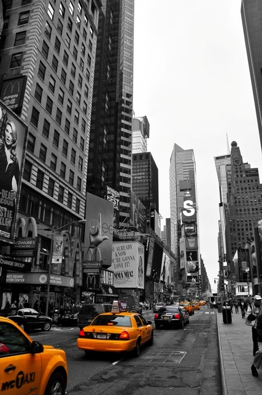

Why I Love This Photo
The "City" photo captures the vibrant energy and endless possibilities of urban life. The interplay of lights, architecture, and movement tells a story of ambition and dreams. Every time I look at this image, I am reminded of the beauty found in everyday city moments and the inspiration that comes from being surrounded by people and progress.